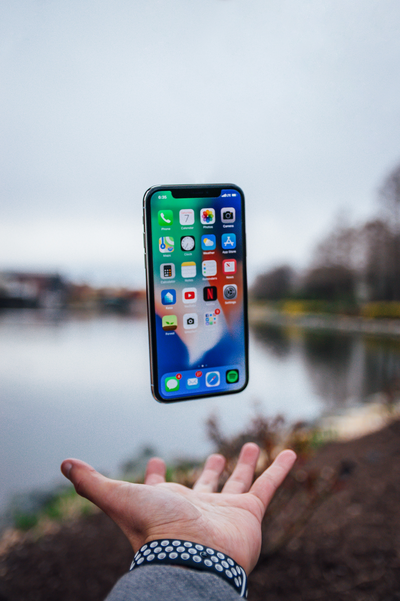

국내 스마트폰 제조업체가 미국 시장에서 선전하고 있다. 삼성전자는 애플의 텃밭에서 3년 만에 정상에 올랐고, LG전자 역시 점유율을 꾸준히 끌어올리며 3위 자리를 지켰다. 다만 4분기에는 아이폰12를 출시한 애플이 다시 선두 자리를 꿰찰 것이란 전망이 우세하다.
또 디스플레이 밝기가 균일하지 않아 화면 한쪽이 붉은빛을 띠는 '벚꽃 현상', 전체적으로 녹색 빛을 띠는 '녹조 현상', 화면과 본체 사이로 빛이 새어 나오는 현상 등도 보고된다. 신제품을 받았는데 제품 모서리나 후면 등 외관에 찍힘이나 흠집이 나 있다는 지적을 하는 소비자도 적지 않다. 주로 어두운 곳에서 강한 빛을 받을 때 사진을 찍으면 빛이 번지거나 잔상이 남는 플레어 현상도 전작 아이폰11과 마찬가지로 여전하다. 